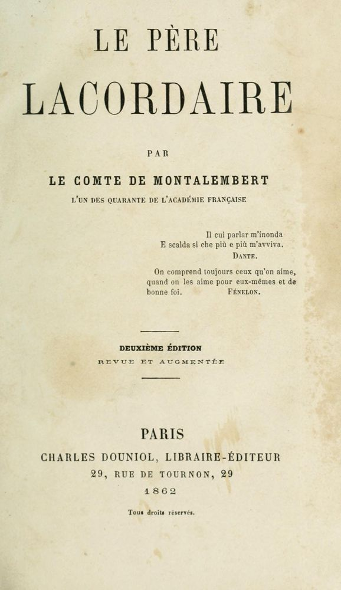
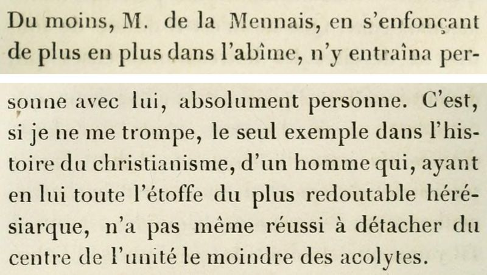

“Toute l’étoffe du plus redoutable hérésiarque” (pp. 75–76)
French: 2nd ed., Paris 1862, pp. 75–76, scans n84–n85. Highlighted: what Lecky paraphrases.


At least M. de la Mennais, sinking deeper and deeper into the abyss, drew no one after him, absolutely no one. It is, if I am not mistaken, the only example in the history of Christianity of a man who, having in him all the stuff of the most formidable heresiarch, did not even succeed in detaching the least of the acolytes from the centre of unity.
Original French
Du moins, M. de la Mennais, en s’enfonçant de plus en plus dans l’abîme, n’y entraîna personne avec lui, absolument personne. C’est, si je ne me trompe, le seul exemple dans l’histoire du christianisme, d’un homme qui, ayant en lui toute l’étoffe du plus redoutable hérésiarque, n’a pas même réussi à détacher du centre de l’unité le moindre des acolytes.
Lecky (ch. II, note 20): “M. de Montalembert, in his Life of Lacordaire, has observed of Lammenais, that there is probably no instance in history of a man possessing so eminently the gifts of a great heresiarch making so little impression by his defection from the Church, and failing so completely to become the nucleus of a sect.” A fair paraphrase; Lecky’s “probably” is Montalembert’s “si je ne me trompe”, and his “in history” is Montalembert’s “in the history of Christianity”. “Lammenais” is Lecky’s spelling, left as printed.
Further down the rabbit hole
Sources that Lecky cites in the notes next to the ones that cite this page.
- Mansel and Fitzgerald, Aids to FaithIf a man can throw a stone, God can work a miracle: the Victorian defence of miracles
- Macaulay, History of England and EssaysMacaulay on Puritans, bear-baiting and the servile Church
- Rose, The State of Protestantism in GermanyDid Kant make the German theologians rationalists? Not quite, says an English critic
- Newman, Essay on the Miracles of the Early Ages“No presumption whatever against miracles” after the Apostles
- “The Supernatural”, Edinburgh Review, October 1862Can a believer in universal natural law accept a miracle?
- Augustine, De civitate DeiSeventy reports, not miracles, and a town, not a province


Backlinks
Every place in Rationalism in Europe that links to this page (generated automatically when the site is built).
- Chapter II: note 20